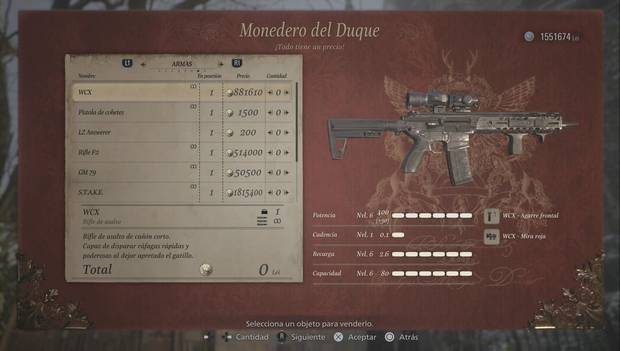

Resident Evil 8: TODAS las armas, piezas y cómo conseguirlas
Todas las armas y piezas de la primera partida.
Aquí te mostramos todas las armas que estarán disponibles en tu primera partida, sin necesidad de cumplir ningún requisito, más allá de avanzar en la historia del juego. Algunas se pueden conseguir gratis, mientras que otras tendrás que comprarlas de la Tienda del Duque:
Pistola LEMI
La Pistola LEMI es una pistola que se cae a cachos. Mejor que tirar con piedras es, desde luego. Puedes equiparle dos piezas y varias mejoras.
Pistola M1911
La Pistola M1911 es una pistola de verdad, de categoría militar. Puedes equiparle dos piezas y varias mejoras.
Escopeta M1897
La Escopeta M1897 es una escopeta clásica, diseñada para cazar... algo más grande que un conejo. Puedes equiparle una pieza y varias mejoras.
Escopeta W870 TAC
La Escopeta W870 TAC es una potente escopeta de bombeo. Puedes equiparle dos piezas y varias mejoras.
Rifle F2
El Rifle F2 es un rifle de francotirador para acechar a los enemigos. Puedes equiparle tres piezas y varias mejoras.
Lanzagranadas GM 79
El Lanzagranadas GM 79 es un potente cañón que lanza explosivos y granadas cegadoras. No puedes equiparle ninguna pieza ni mejora.
Mágnum M1851 Wolfsbane

El Mágnum M1851 Wolfsbane es un potente revólver mágnum, capaz de parar en seco a casi cualquier enemigo. Puedes equiparle dos piezas y varias mejoras.
Pistola V61 Custom
La Pistola V61 Custom es una potente pistola ametralladora para mantener a raya a los enemigos. Puedes equiparle tres piezas y varias mejoras.
Escopeta SVG-12
La Escopeta SVG-12 es una poderosa escopeta automática con un enorme cargador. Puedes equiparle tres piezas y varias mejoras.
Todas las armas y piezas de NG+
Una vez has terminado la partida y empiezas el NG+ o Nueva partida+, cargando el archivo de partida completada, podrás conseguir nuevas armas. Salvo una de ellas, todas exigen ser desbloqueadas antes en la tienda de contenido extra:
Mágnum S.T.A.K.E.
La Mágnum S.T.A.K.E. una potente mágnum semiautomática. Pocas cosas aguantarán un impacto directo cuando la tengas completamente mejorada. Puedes equiparle dos piezas y varias mejoras.
Fusil de asalto WCX
El Fusil de asalto WCX es un potente rifle de combate, letal en manos experimentadas. Puede equiparse con dos piezas y varias mejoras.
Espada láser LZ Answerer
La Espada láser LZ Answerer es un arma completamente letal. Si no puedes usar la Fuerza, al menos usa esta maravilla. No admite piezas ni mejoras.
Cuchillo Karambit
El Cuchillo Karambit es un exótico cuchillo de combate, letal a corta distancia. No admite piezas ni mejoras.
Pistola USM-AI
La Pistola USM-AI es una pistola especial, altamente modificada para un soldado concreto. No admite piezas ni mejoras.
Fusil de asalto Dragoon
El Fusil de asalto Dragoon es un fusil de asalto preparado para combates contra BOWs. No admite piezas ni mejoras.
Cañón de mano PZ
El Cañón de mano PZ lleva cinco balas, más que suficientes para matar a cualquier cosa. No admite piezas, pero sí varias mejoras.
Pistola de cohetes
La Pistola de cohetes no es más que una pistola de bengalas con ínfulas. No admite piezas ni mejoras.
Todas las armas DLC
Estas armas solamente estarán disponibles comprándolas vía DLC, o incluidas con ciertas ediciones especiales del juego:
Pistola Samurai Edge - AW Model-01
La Pistola Samurai Edge - AW Model-01 estará disponible únicamente vía DLC. Una pistola de escasa utilidad, se compra del Duque por 200 lei. No admite piezas ni mejoras.
Cómo mejorar armas.
Para mejorar armas, simplemente espera a poder acceder al Duque y escoge la opción correspondiente. Para mejorar armas únicamente necesitas lei y haber avanzado lo suficiente en la historia (no estarán todas las mejoras disponibles desde el pricipio).
Cómo guardar armas en el baúl.
En Resident Evil 8 Village no hay baúl para guardar objetos. Si quieres librarte de un arma, tendrás que vendérsela al Duque. El arma se vende con todas sus mejoras y piezas, lo que afecta a su precio tanto al venderla como al querer recuperarla (la comprarás tal cual la vendiste: a más mejoras, más caras).
Cómo conseguir armas con munición infinita.
Es posible conseguir armas con munición infinita, como en casi todos los Resident Evil. Aquí te contamos cómo conseguir munición infinita para todas las armas.